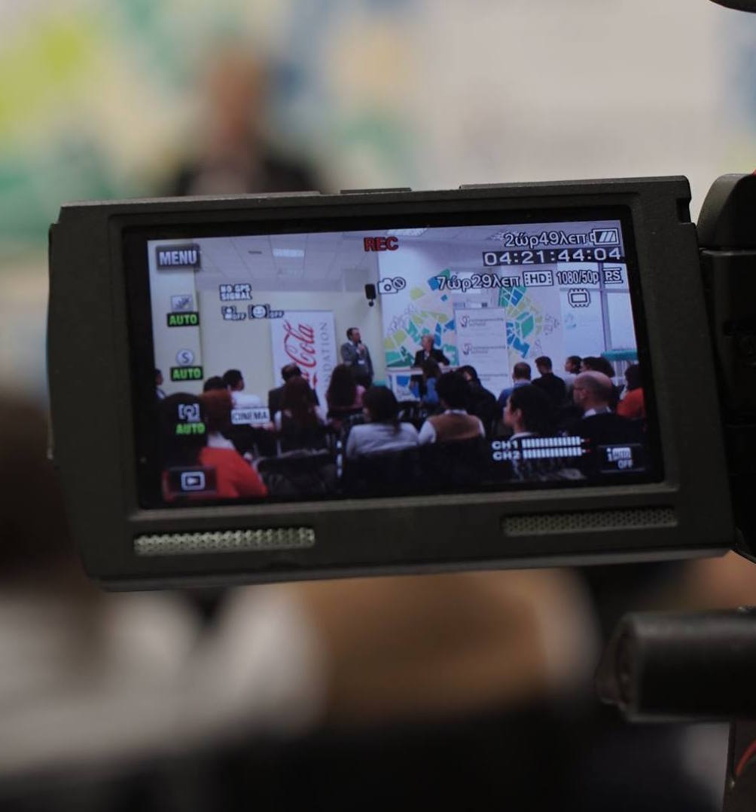
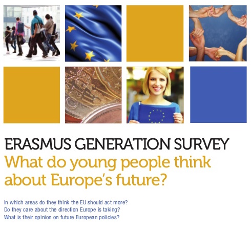

EU public affairs and communications professional. Politics junkie.
Following the European tech startup scene and all things digital.
Previously at ThinkYoung, Burson-Marsteller and Media@LSE.
|  | Entrepreneurship SchoolA school without teachers: only successful entrepreneurs sharing their own experience with young and motivated people, in order to help them develop their entrepreneurial skills. |
|  | Erasmus Generation SurveyThe survey asked young people from across the 28 member states what the Union means to them, and what the top priorities should be for European leaders over the next five years. |
TwiplomacyThe leading global study of world leaders on Twitter, which aims to identify the extent to which world leaders use Twitter and how they connect on the social network. |